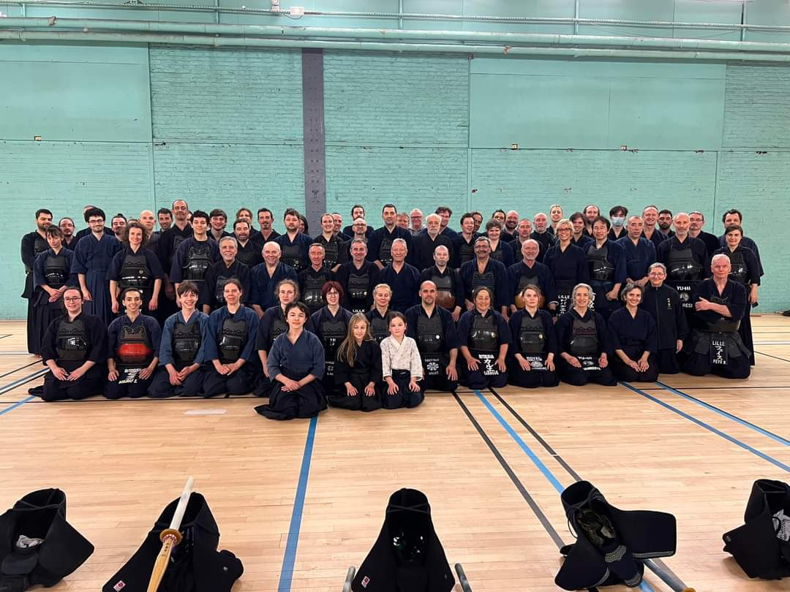
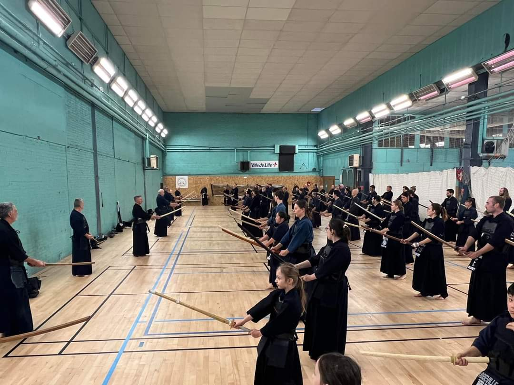

Ce week-end s’est déroulé le 34ème stage de Lille de kendo, qui a réuni près d’une centaine de stagiaires, que nous remercions pour leur présence et leur sincère engagement dans la pratique.

Un grand merci à Bernard De Backer et Jean Paul Carpentier pour la richesse et la bienveillance de leur enseignement, à Emilio Gomez et Yves Mairesse pour leur encadrement et à Jean Luc Grausem et Jean Claude Wolf pour leur présence si précieuse à ce stage, tous 7ème dan.
Un remerciement spécial au Président du CNKDR, Éric Malassis et au Président du club, Patrick Vigneau, pour leur présence.

Merci encore à Nguyen Pierre et De Backer Stéphanie qui ont assuré l encadrement des enfants tout comme à nos bénévoles qui ont contribué au bon déroulement du stage. Merci à Walle Stéphane, Henion Bruno et Vlaeminck Philippe.
Enfin, félicitations à GENETEL Jessica qui a obtenu son 1er kyu durant le stage.
CLJK